What this guide covers
This guide follows the four modules in the supplied GIG ELD Portal manual. Portal menu names and field labels are kept in English so you can find them on screen.
Create driver profiles, credentials and HOS/DVIR permissions.
Add tractors and trailers with their required vehicle information.
View live vehicle location, status, speed and historical routes.
Calculate and download mileage details for IFTA reporting.
Add and configure a new driver
Stage 1 — Create the driver profile
- Open Drivers: Sign in to the portal, go to Administration → Drivers, and click the blue New Driver link on the right side of the active drivers table.
- Enter driver details: Complete Name, Last Name, Driver License and Driver License Expiration. Use the calendar for the expiration date.
- Optional details: You may also enter Alias, Employee ID, Phone, Emergency Contact, Vehicle or Access ID.
- Save: Click Save at the lower-left corner of the orange form.
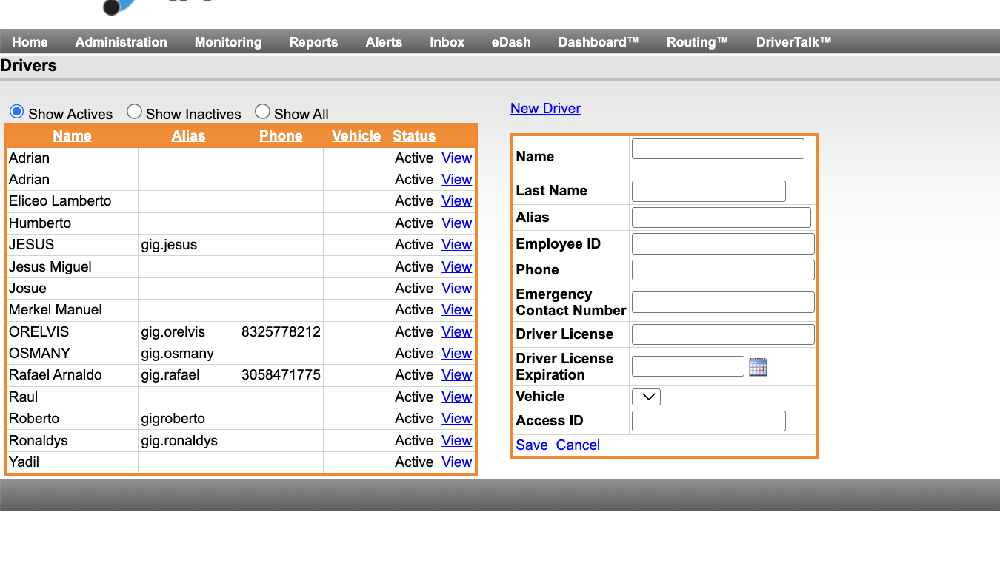
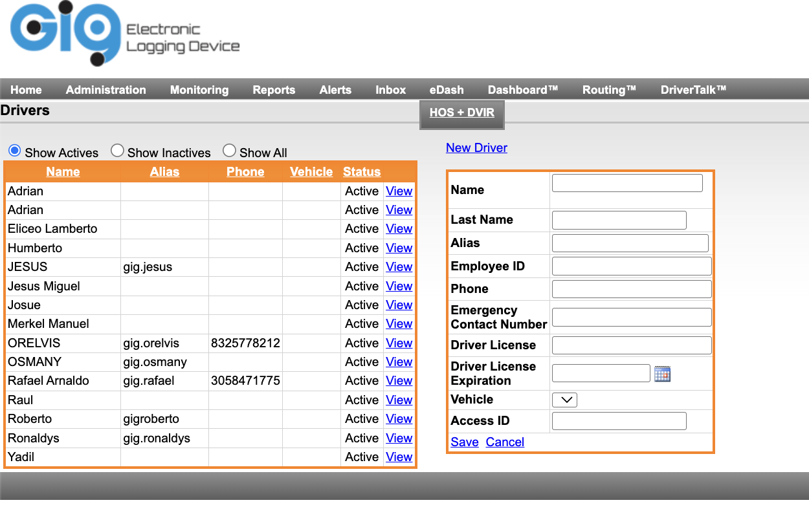
Stage 2 — Set login credentials and permissions in eDash
- Open eDash: From the dark top navigation bar, open eDash and select HOS + DVIR.
- Open the driver directory: Go to Manage → Carriers. In the ACTIONS column, click the Drivers icon (person with a steering wheel; second icon from the left).
- Edit the driver: Find the new driver in the lower Drivers table (use Search) and click the blue pencil icon in Actions.
- Enter credentials and rules: Enter Username, Password and Confirmation. Select Home Base, Ruleset (for example, 70 Hours/8 Days), 24-Period Starting Time, DVIR Access, Units and Registration State. Verify the License Number.
- Enable permissions and save: Check Active, Personal Use (Personal Move) and Yard Move. Also select the applicable DVIR options, such as DVIR WiFi Only and Allow to take DVIR photo. Click the blue Save button.
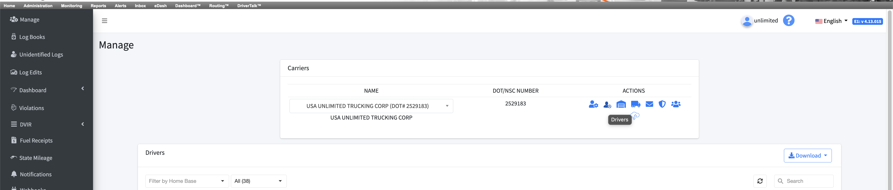
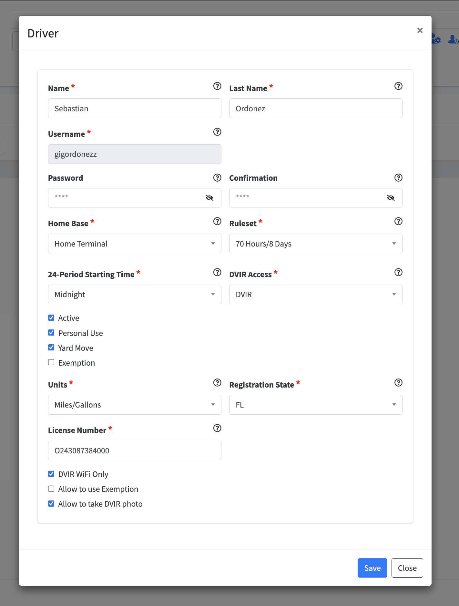
Add a tractor or trailer
- Open Assets: Go to eDash (HOS + DVIR) → Manage. In the Carriers table, use the ACTIONS column and click the truck icon (Assets; fourth icon from the left).
- Start a new record: In the Assets table, click the blue + New button at the upper-right corner.
- Choose the type: In Asset Type, select Tractor or Trailer. Then choose the matching Asset Subtype.
- Complete required fields: Fill in the required and operational information, make sure Active is checked, and click the blue Save button.
Available subtypes
| Asset type | Subtypes listed in the manual |
|---|---|
| Tractor | None, Bus, Freezer Truck, Truck, Crane |
| Trailer | None, Flat, Trailer |
Asset form fields
| Field | Applies to | What to enter |
|---|---|---|
| Number * | Tractor and Trailer | Fleet unit number or internal identifier. |
| VIN * | Tractor | Vehicle identification number (17 characters). |
| Fuel Type Primary * | Tractor | Main fuel type, for example Diesel or Other. |
| Plate | Tractor and Trailer | Registered license plate number. |
| Registration State * | Tractor and Trailer | State where the unit is registered (example: FL). |
| Home Base * | Tractor and Trailer | Assigned terminal or base (example: Home Terminal). |
| Custom DVIR / Description | Tractor and Trailer | Optional custom inspection template and unit notes. |
| ECM Identifier | Tractor | Optional MAC address or ELD device identifier (##:##:##:##:##:##). |
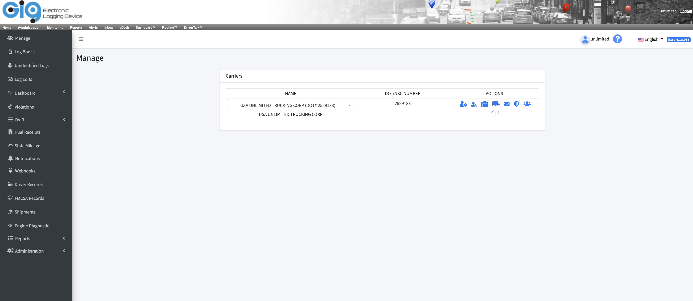
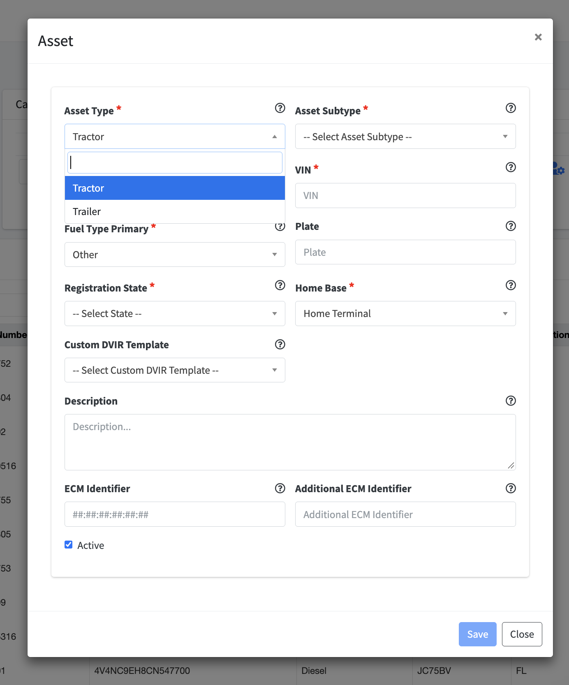
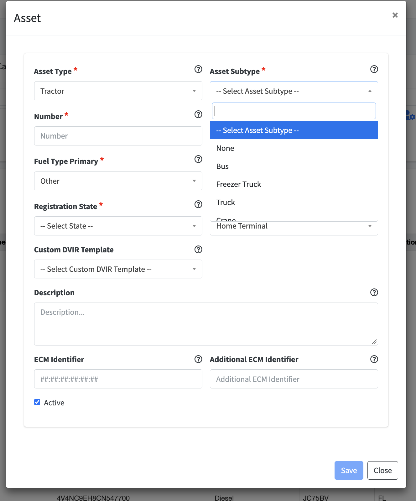
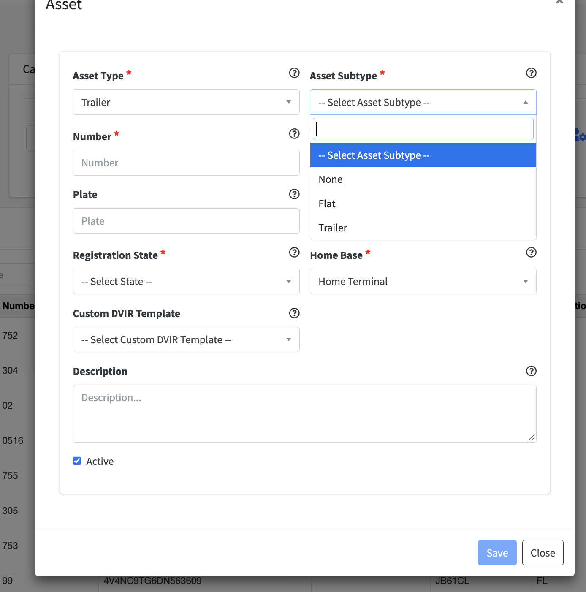
Monitoring: GPS tracking and routes
1. Live Monitoring Legacy and Live Monitoring
Both tools show the vehicle's location on a map (Map or Satellite view), operating status (Off, Idle or Moving), fuel percentage (Fuel %) and current speed.
- Live Monitoring Legacy: Includes configurable automatic refresh (for example, every 15 seconds), a Today's Activity tab, Find... search and alerts for vehicles without an assigned driver.
- Live Monitoring: The modern view provides a larger map, quick filters for vehicles and Points of Interest (POIs) in the upper-left corner. Click a truck to open its detail card.
2. Live Routing
Open Monitoring → Live Routing to view the progress of assigned routes, estimated times and delivery stops in progress.
3. Historical monitoring
- Set the period: Open Monitoring → Historical. In the left Search Form panel, enter the start date and time (From) and end date and time (To). You can also use Today, Yesterday, This Week, Last Week, This Month or Last Month.
- Filter and search: Select a vehicle in Vehicle or an operator in Driver, then click Search.
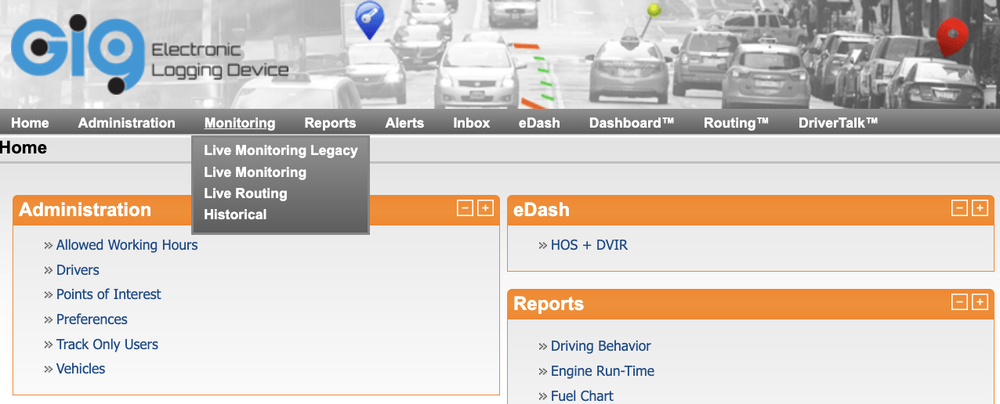
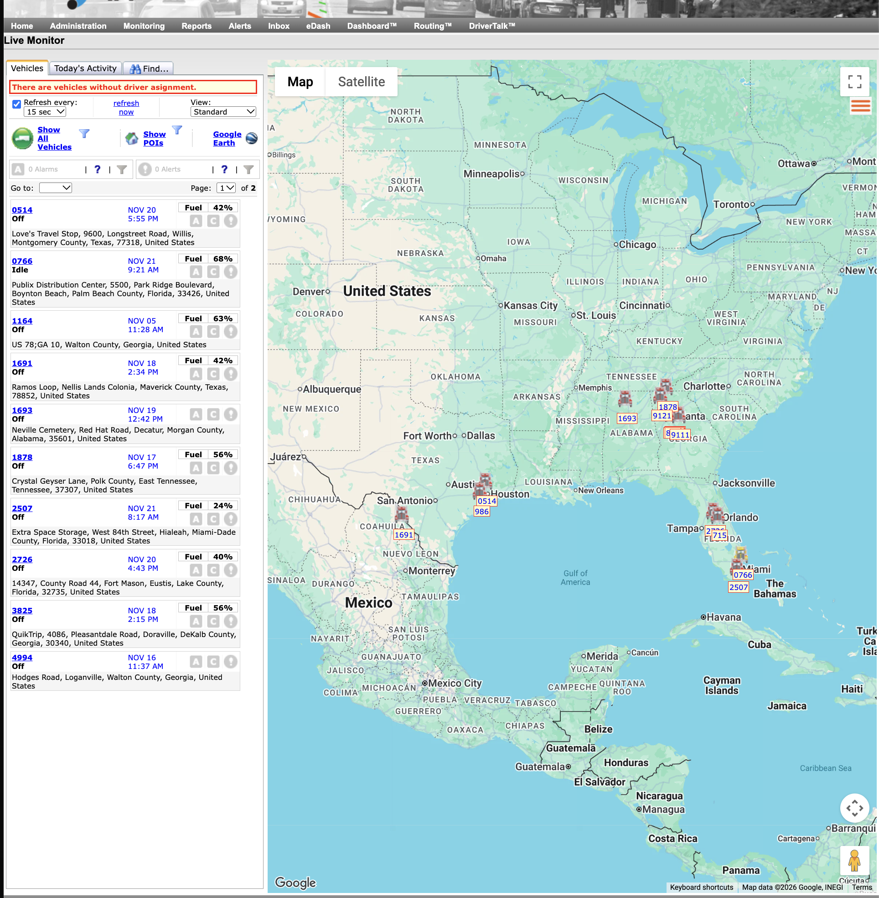
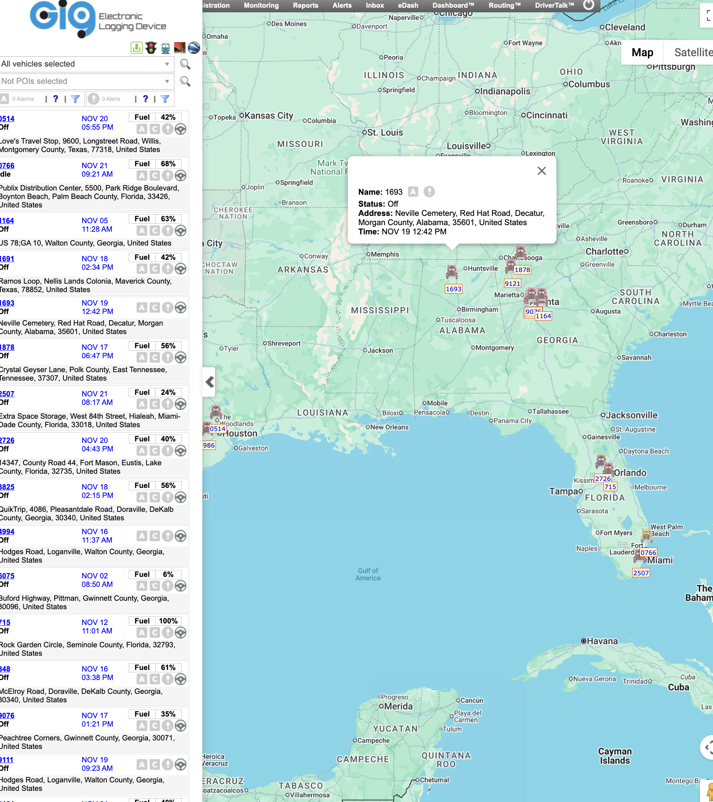
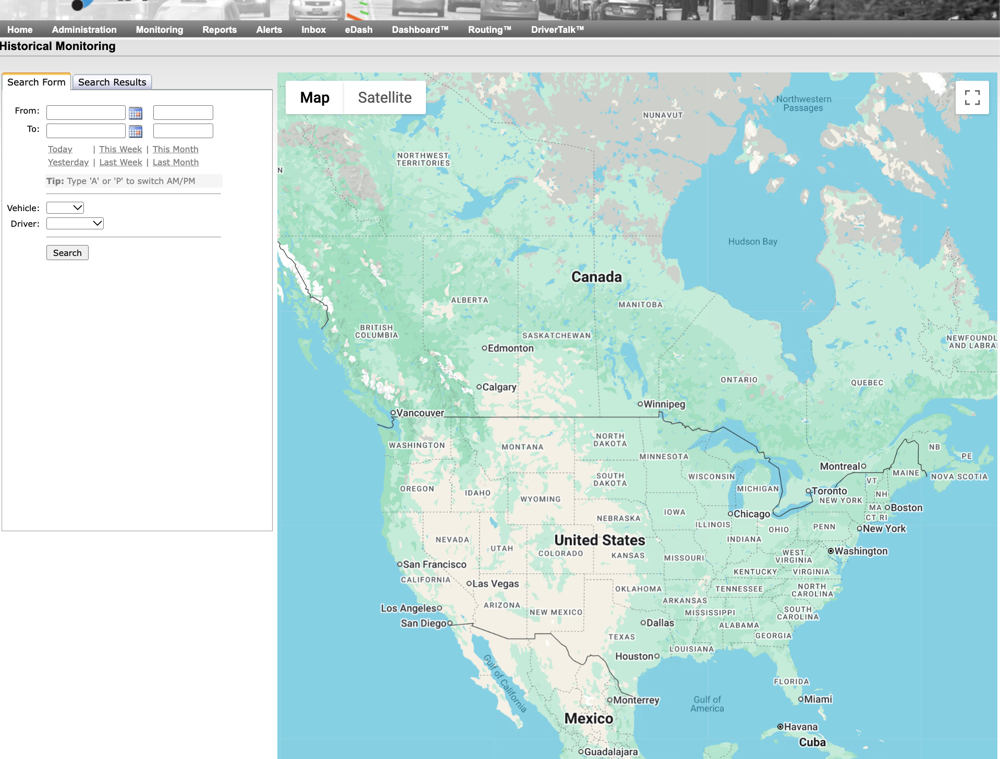
Generate and download IFTA reports (State Mileage)
- Open State Mileage: Enter eDash (HOS + DVIR) and select State Mileage in the left menu, below Fuel Receipts.
- Choose the period: Select the fiscal year in Year (for example, 2026). Choose a quarter in Quarter (1: Jan–Mar, 2: Apr–Jun, 3: Jul–Sep, 4: Oct–Dec), or leave Quarter as None and select a specific Month.
- Select the vehicle: Confirm Region is USA and choose the Carrier. Open Vehicle and select the unit using its VIN and truck number.
- Run the calculation: Click the blue Execute button to generate the summary: Total IFTA Miles, Total Non-IFTA Miles, Total Miles, Total Gallons, MPG and Total Tax Due, plus the Jurisdiction table.
- Download the report: Click Download above the upper-right corner of the jurisdictions table.
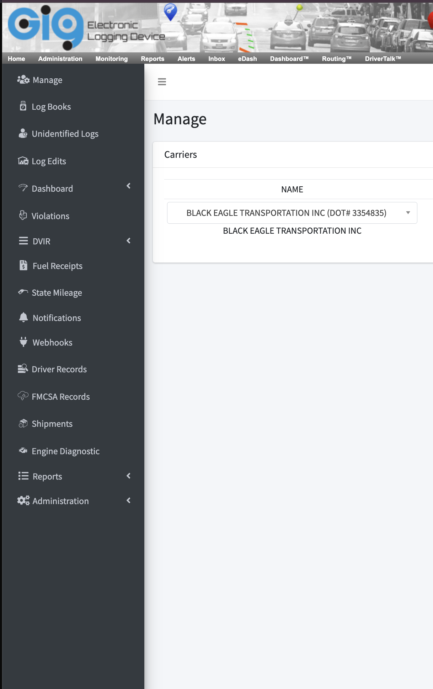
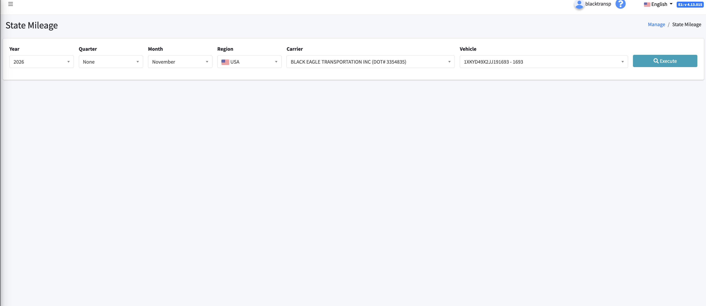
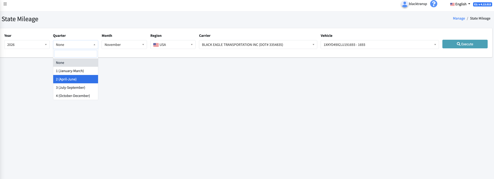
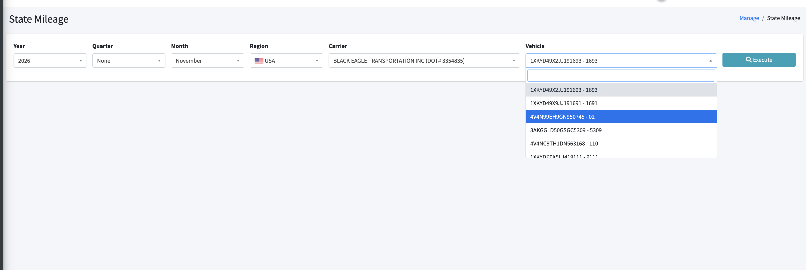
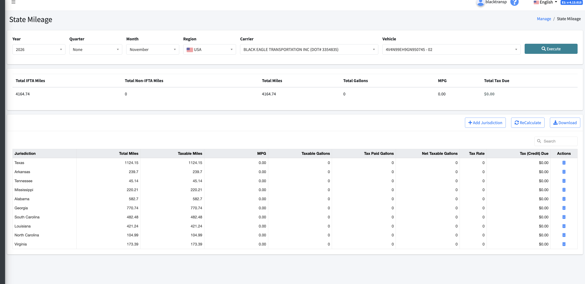